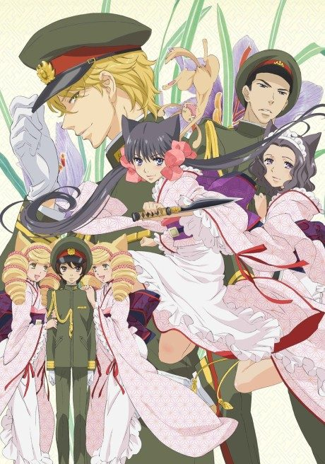

Anime
Manga
2010 · Romance, Supernatural
Zakuro
おとめ妖怪 ざくろ
AniList7.1
Animeter—
Episodes13 ep
MangaUnclear
Anime finished. Where does the manga pick up?
StatusNo source yet
We looked for where the anime ends in the manga but found no source we trust yet. The manga is still running.